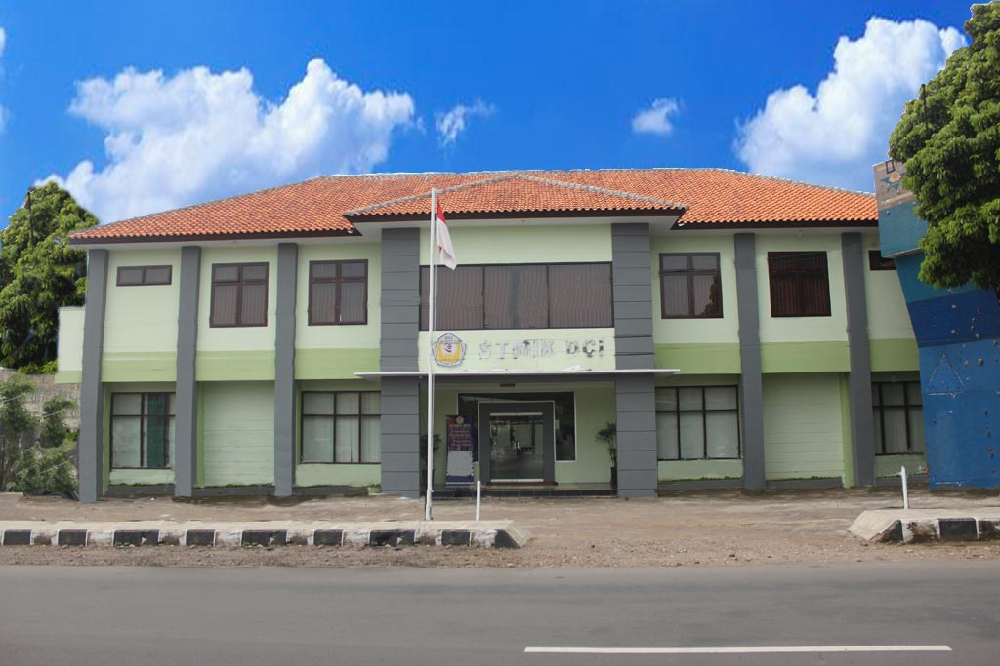

Rekayasa Gambar dengan Clonning

Merupakan pengolahan gambar/foto dengan salah satu tool di Aplikasi Photoshop. Kloning atau dalam kata lain berarti menggandakan sebuah objek dengan menggunakan sebuah tool yang bernama Clone Stamp Tool. Selain berfungsi untuk kloning, tool ini sebenarnya banyak kegunaannya seperti menghilangkan jerawat pada foto, menghaluskan gambar, dan lainnya.